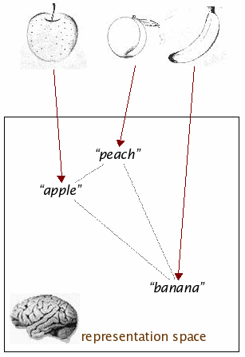

Unit 7: Perception III: perceptual truth

perceptual veridicality
- How neurons can be truthful
- Veridical representation: a computational definition
- Visualizing representational spaces with MDS (a refresher)
- Behavioral evidence for veridical perception of shape similarities
- Electrophysiological evidence for veridical representation of shape similarities
- Using fMRI to map the brain's shape representation space
on truth in perception
")
The natural appetite or taste of the human mind is for
truth; whether that truth results from the real agreement
or equality of original ideas among themselves; from the agreement
of the representation of any object with the thing represented; or
from the correspondence of the several parts of any arrangement with
each other.
Joshua Reynolds
Seven discourses on art
1776
on truth in perception
The natural appetite or taste of the human mind is for
truth; whether that truth results from the real agreement
or equality of original ideas among themselves; from the agreement
of the representation of any object with the thing represented; or
from the correspondence of the several parts of any arrangement with
each other.
Joshua Reynolds
Seven discourses on art
1776
How can a neural representation be truthful??
how neurons can be truthful
(1) by selectively responding to external ("distal") stimuli; (2)
by being causally effective, as appropriate, towards other
neurons; and (3) by veridically representing distal relationships
(for instance, shape differences between objects "out there" in the world).
veridical representation

Perception of distal entities (objects or events) can be
veridical (truthful) with respect to categorization IF
their natural relevant distal similarities are
expressed in the internal representation space on which
categorization is based.
behavioral evidence for veridical perception of shape similarities
- Top left: seven computer-generated humanoid shapes used as
stimuli, arranged so as to make explicit their similarity
relationships.
- Top right: the star-shaped layout of the true
similarity space is revealed in this MDS map of one of the subjects'
response data. The fit between the true and
actual configurations is highly significant.
- Bottom left: the same analysis, applied to data from a study in
which subjects judged similarities among memorized shapes.
- Bottom right: a computer model replicates perfectly the pattern of
human performance.
neuron-level veridicality in the monkey (Op de Beeck et al., 2001): the stimuli
veridicality: stimuli configuration vs. human #1's behavioral data

veridicality: stimuli configuration vs. human #2's behavioral data
veridicality: stimuli configuration vs. monkey Y's behavioral data
veridicality: stimuli configuration vs. monkey E's behavioral data

veridicality: stimuli configuration vs. combined neurons' response data
veridicality: some details regarding neurons' responses
|
|
| correlation C between the configuration
recovered by MDS from neurons' responses and the real configuration,
vs. the # of neurons (dashed line: threshold of significant
difference from baseline) |
the responses of one of the neurons to the 8
stimuli |
SUMMARY: neuron-level veridicality in the monkey
The square arrangement of eight stimuli in a parameter space is
reflected in the layout of the eight corresponding points recovered by MDS
from inter-stimulus distances, as measured in the image space (squares) and
in a 124-neuron ensemble response space (diamonds).
H. Op de Beeck, J. Wagemans, and R. Vogels, Inferotemporal neurons
represent low-dimensional configurations of parameterized shapes,
Nature Neuroscience 4:1244-1252 (2001).
visualizing the human brain space
A sequence of fMRI snapshots of the brain activity of a
subject watching a series of visual stimuli —
[Courtesy of Kalanit Grill-Spector]
The result on the next slide is from Towards direct visualization of the internal shape
representation space by fMRI, S. Edelman, K. Grill-Spector, T. Kushnir, and R. Malach,
Psychobiology 26:309-321 (1998).
For a review, see Beyond mind-reading: multi-voxel
pattern analysis of fMRI data, K. A. Norman, S. M. Polyn, G. J. Detre,
and J. V. Haxby, Trends in Cognitive Sciences 10:424-430 (2006).
visualizing human brain activity space
representation and reality
The perceptual representation of certain aspects of the world in the
brain is veridical.
Veridicality is ill-defined for a single stimulus. It can only be
properly assessed for a set of stimuli (which makes it
fundamentally statistical, of course).
To find out more about veridicality and what characteristics of neural
computation make it possible, see Representation
and Recognition in Vision, S. Edelman, MIT Press, 1999.